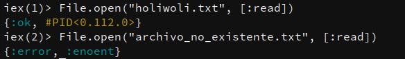

12340xcafe0o7650b10101.00.24560.314159e1314159.0e-5iex(1)> "Holi Woli" iex(2)> """ ...(2)> Texto multilinea ...(2)> segunda linea ...(2)> tercera linea ...(2)> """ iex(3)> "եոգլի" iex(4)> "多くあります"
Los Strings en Elixir se escribe solamente con ""
Existe un type similar a String que usa ''.
Este type se llama chart list y solo sea usa cuando queremos usar librerias de Erlang.
Equivalente a Symbolos en Ruby
iex(1)> :esto_es_un_atomo iex(2)> :"Un atomo con espacios" iex(3)> true == :true iex(4)> false == :false iex(5)> nil == :nil iex(6)> :holi_woli iex(7)> Enum == :enum
Es equivalente a listas en otros lenguajes.
Fixed size container for multiple elements
iex(1)> {}
iex(2)> {1, :two, "three"}
iex(3)> {:foo, :bar, :baz}
iex(4)> {:ok, :returned_value}
iex(5)> {:error, "Que paso amiguito?"}
Es el equivalente a hashes en Ruby
iex(1)> %{"holi" => "woli", a: 1, b: 2}
iex(2)> %{:nombre => "Albert", :edad => 28}
%{nombre: "Albert", edad: 28}
iex(3)> %{:a => 1, "b" => 2, [:c, :e, :e] => 3}
iex(1)> nombre = "Albert" "Albert" iex(2)> edad = 28 28 iex(3)> nombre = "Amiguito" "Amiguito" iex(4)> nombre "Amiguito" iex(5)> edad 28
iex(1)> {frase, apodo, edad} = {"Albert", "Amiguito", 28}
{"Albert", "Amiguito", 28}
iex(2)> apodo
"Amiguito"
iex(3)> edad
28
iex(1)> {edad, edad} = {28, 29}
(MatchError) no match of right hand side value: {24, 25}
iex(2)> {1, y, 1} = {1, 2, 3}
(MatchError)
iex(3)> {1, y, 3} = {1, 2, 3}
{1, 2, 3}
iex(4)> {{x}, 2, {message, x}} = {{7}, 2, {"holi woli", 9}}
(MatchError)
iex(5)> {{x}, 2, {message, x}} = {{7}, 2, {"holi woli", 7}}
{{7}, 2, {"holi woli", 7}}
iex(5)> message
"holi woli"
iex> %{"holi" => mensaje} = %{"holi" => "woli", a: 1, b: 2}
iex> mensaje
iex> %{:a => a, "b" => value, [:c, :e, :e] => {a, 2, 3}} = %{:a => 1, "b" => 5, [:c, :e, :e] => {4, 2, 3}}
(MatchError)
iex> %{:a => a, "b" => value, [:c, :e, :e] => {a, 2, 3}} = %{:a => 1, "b" => 5, [:c, :e, :e] => {1, 2, 3}}
iex> a
1
iex> value
5
iex> velocidad = fn (distancia) -> :math.sqrt(2 * 9.81 * distancia) end #Function<6.52032458/1 in :erl_eval.expr/5> iex> velocidad.(3) 7.672027111526653 iex> sum = fn (a, b) -> a + b end #Function<12.17052888 in :erl_eval.expr/5> iex> sum.(1, 2) 3
iex> velocidad = fn ...> distancia -> :math.sqrt(2 * 9.81 * distancia) ...> end #Function<6.52032458/1 in :erl_eval.expr/5> iex> velocidad.(10) 14.007141035914502
iex> intercambio = fn
...> {primero, segundo} -> {segundo, primero}
...> end
#Function<6.52032458/1 in :erl_eval.expr/5>
iex> intercambio.({6, 8})
{8, 6}

iex> verificar_archivo = fn
...> {:ok, archivo} ->
...> result = "Leyendo archivo: #{IO.read(archivo, :line)}"
...> File.close(archivo)
...> result
...> {_, error} -> "Error: #{:file.format_error(error)}"
...> end
iex> verificar_archivo.(File.open("holiwoli.txt", [:read]))
iex> verificar_archivo.(File.open("archivo_no_existente", [:read]))
$ mix new my_application
def factorial(0), do: 1 def factorial(n), do: n* factorial(n-1)
defmodule MyApplication do
def que_es(x) when is_number(x) do
"#{x} es un numero"
end
def que_es(x) when is_list(x) do
"#{inspect(x)} es una lista"
end
end
defmodule MyApplication do def factorial(0), do: 1 def factorial(n) when is_integer(n) and n>0, do: n* factorial(n-1) def factorial(n) when is_integer(n) and n<0, do: "Solo numeros positivos!" def factorial(_), do: "Que paso amiguito?" end
Diseñado inicialmente para resolver este problema:
lista = 1..500_000 temp = Enum.map(lista, &(&1*2-20)) respuesta = Enum.filter(temp, &(rem(&1, 3) == 0 || rem(&1, 5) == 0)) respuesta = Enum.take(temp, 5) Enum.take(Enum.filter(Enum.map(1..500000, &(&1*2-20)), &(rem(&1, 3) == 0 || rem(&1, 5) == 0)), 5)
1..500_000 |> Enum.map(&(&1*2-20)) |> Enum.filter(&(rem(&1, 3) == 0 || rem(&1, 5) == 0)) |> Enum.take(5)
1..500_000 |> Stream.map(&(&1*2-20)) |> Stream.filter(&(rem(&1, 3) == 0 || rem(&1, 5) == 0)) |> Enum.take(5)
Thank You ʕ•ᴥ•ʔ